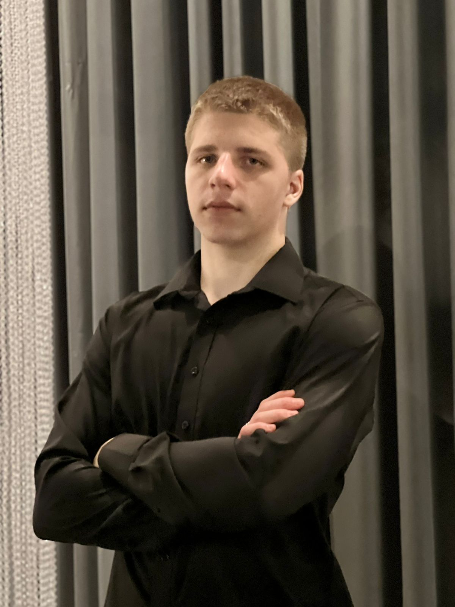

Sobre mim

Olá! Sou Felipe Gabriel Gomes, estudante de Análise e Desenvolvimento de Sistemas na UTFPR e atuo como Suporte Técnico na SAG Software Agroindustriais.
Tenho foco em desenvolvimento de software, principalmente em backend e aplicações web usando Python e SQL, agora aprendendo JavaScript. Gosto de entender como os sistemas funcionam por dentro e transformar regras de negócio em soluções bem estruturadas.
Participei de projetos práticos, onde desenvolvi interfaces web. Já ministrei oficinas de Python e cursos de Git/GitHub para colegas, o que reforçou meu interesse em compartilhar conhecimento e trabalhar em equipe.
Busco oportunidades como desenvolvedor júnior para aplicar o que venho estudando e ganhar experiência em ambiente profissional real.
Informações chave
- Cursando Análise e Desenvolvimento de Sistemas na Universidade Tecnológica Federal do Paraná (UTFPR).
- Experiência com desenvolvimento de APIs, banco de dados e aplicações web em projetos acadêmicos e pessoais.
- Atuação como Suporte Técnico na SAG, com uso de SQL, análise de logs e contato com usuários.
- Valorizo o aprendizado contínuo e utilizo IA como apoio para estudar e prototipar soluções.
Outras informações
Inglês
- Compreensão auditiva: intermediário
- Comunicação oral: intermediário
- Leitura: intermediário
- Escrita: básico
Currículo Lattes (CNPq)
Perfil acadêmico vinculado às atividades de Iniciação Científica.
Acessar perfilHabilidades técnicas
Linguagens: Python, JavaScript, SQL, Java, C, PHP.
Frameworks e bibliotecas: FastAPI, Laravel (em estudo).
Bancos de dados: PostgreSQL, MySQL, Oracle, SqlServer
Ferramentas: Git, GitHub, VS Code, GitHub Pages.
Uso essas tecnologias em projetos pessoais e acadêmicos, com foco em APIs REST, integração com banco de dados e desenvolvimento web full stack em nível júnior.
Interesses
Áreas da tecnologia que mais me interessam e nas quais pretendo me aprofundar.
- Desenvolvimento backend e full stack
- Inteligência Artificial e PLN
- Bancos de dados e dados
- Boas práticas de engenharia de software
Projetos
- API de tarefas (FastAPI + PostgreSQL): API REST com operações de CRUD e integração com banco relacional, desenvolvida para estudo de backend e boas práticas.
- CRUD de tarefas em PHP + MySQL: Aplicação web simples para gerenciamento de tarefas, usando HTML, CSS, PHP e MySQL.
- Site pessoal (este portfólio): Projeto estático em HTML, CSS e JavaScript hospedado no GitHub Pages.
- Oficinas de Python: Aulas introdutórias de lógica de programação e Python para iniciantes.
- Curso de Git e GitHub: Treinamento básico de versionamento e fluxo de trabalho com Git para colegas da faculdade.
- Iniciação Científica – UTFPR: Pesquisa sobre uso de NLTK em Engenharia de Software, com foco em Processamento de Linguagem Natural.